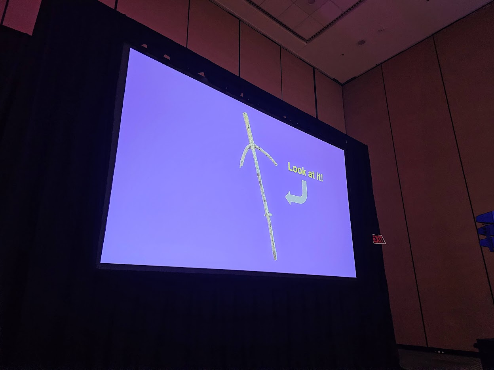

The Factory Reset Jam (& GDC)
On March 21 I had the incredible opportunity to talk about The Factory Reset Jam as part of the Experimental Games Showcase at GDC 25. Being a part of a showcase with so many talented and inspiring creators is not something I'll ever forget. For those who attended, I sort of became the "GDC Stick Guy".

However, our presentations had a hard 7-minute time limit to them, and as I was trying to prepare my own segment of the showcase, I found that I had a lot more non-stick related stuff to say about this jam than I had time allotted. I figured it would be best to save the excess for a blog post, and try to share with others why this goofy little game jam might be more important to me than I had originally thought.
The Seed
I probably should start with how the idea for the jam came around in the first place. My day job has me out in the desert a lot, often in places with no cellular service or wifi available. It was in a solitary moment of boredom in the restroom when I began to explore the apps on my phone I had never touched before, not unlike how one might read the back of a shampoo bottle. I discovered that my iPhone had a "bubble level" app I had never seen before, and over the course of the day, the idea for "Level With Me" began to take shape. The seed had been planted, and I had a new gremlin in the back of my subconsious.
Folk Games & Technology
Perhaps the biggest talking point I had to cut out was all the discussion about the original inspiration for the jam - exploring how folk games and technology can intermingle. Douglas Wilson took aim at this idea 13 years ago in one of my favorite GDC talks I’ve ever seen. After so many years it is still worth watching today.
He summarizes folk games as being simple, or easy to understand for all players involved. Games are organically spread through word of mouth, and as a result, they usually have “house rules”. Importantly for the jam, he states that if the game requires any equipment, it's usually a pretty commonplace object (how many of you are reading this on a smartphone?). Of key importance, however, is how he highlights folk games as being an attitude of un-seriousness that players and designers approach the games with.
A Factory Reset
While I'm by no means an academic, the study of "play" is one that has fascinated me for some years now. I've personally felt that traditional & folk games (a phrase which I use, admittedly inaccurately, to include playground games, parlor games, and the like...) represent the purest form of play that we carry from childhood into adolescence and adulthood. The appropriation and subversion of commonplace objects and settings to more playful purposes feels not unlike what a child would do naturally when they find a stick on the ground.
Somewhere along the line though, as we mature, we begin adopt a more serious, calculating, reason-driven mentality that becomes pretty distant from the more joyful simplicity of childhood. Sticks just aren't as cool anymore.
The attitude Doug suggests that folk games bring to the makers and players of these games could help get ourselves back in touch with childhood, if we only remember that we have permission to do so. Emily Koonce, in another wonderful talk on folk games and their design, goes further into the importance of this reminder of permission and the radical effect it can have on players and designers alike!
As the name suggests, "The Factory Reset Jam" was intended to be an opportunity to strip out all of the clutter from our phones (metaphorically, at least). You ignore all of the unread emails, the social media apps, the games you downloaded from the app store, and instead focus on the bare necessities - the capabilities the phone has out of the box. Suddenly we're met with new and strange limitations, and we maybe begin to see things in our phones that we never would have seen before. It would bring us back to a more natural and pure sense of curiosity and exploration, rather than relying on App Store algorithms to tell us where to best have fun.
As Emily discovered, our focus shifts entirely when we are reminded that we do have permission to treat objects, like our smartphones, as simple playthings rather than the elegant marvels of engineering they were designed to be.
A Sabbath from The Cycle
In the weeks leading up to GDC, while I was still struggling to tie the presentation together, my church held a 2-part Sunday School class centered around the book Sabbath as Resistance by Walter Brueggemann. Brueggemann highlights a seemingly endless cycle of production and consumption (and in turn, a cycle of anxiety) we as a society have fallen into under capitalism.
It was hard for me not to see our smartphones as artifacts of this cycle - each new model is advertised with higher processing power, better sensors and lenses for your camera, and all sorts of new apps and tools to assist you in your productivity in the every day. On the other end, apps are topping the charts that keep us hooked in consuming new media in all forms, turning our very attention into a commodity. In spite of the good that our phones do bring to our everyday lives, we also need to take breaks from them.
A key point I've learned though, is that participating in a sabbath goes beyond simply ceasing to do anything for one day out of the week. Brueggemann highlights that by taking energy away from the capitalist cycle of anxiety, away from our own production and consumption, we can instead redirect our energy to the world around us, to the neighborhood. A simple act of play is a way of doing this, and my hope is that The Factory Reset Jam could be treated more as an act of play rather than one more source of anxiety. Perhaps it too can provide a little perspective in how we treat technology as a whole, both as designers and as everyday users.
In Hindsight
The original hope for this jam was to be able to compile a list of folk games for your phone, not unlike the aforementioned "Games for People" zine, that could be shared, printed, and read in play groups looking for something new to try with their smartphones. It’s obvious though that this doesn’t quite work. Half of smartphone owners have androids, half have iphones. We all run on different OS versions and most phones are shipped with different apps than others. But nonetheless, I believe we can cut quite close to building a social library of games for smartphones that people can adjust as needed in order to treat these devices more playfully, be it via zines, word of mouth, text chains or otherwise.
Rabbit Holes
I believe I was listening to an episode of the Tolkien Professor podcast on a long drive home when I pulled out my phone and recorded myself saying the following. I'm not sure what I think of it all now since recording it, but it feels worth sharing nonetheless:
“By applying play to objects of productivity, do we humble them? Is it possible that innovation has become the god or the idol of many, without being fully aware of the consequences our innovation can take us? Perhaps we humanize technology a lot more when we play with it. Perhaps we bring the future down to our level by humbling these pieces of equipment and not prioritizing their use and productivity. Tolkien expressed concerns about technological advancement and how it just continued to be used for war to kill more quickly and efficiently. Today we see AI used for a lot of playful means but also for a lot of less playful ones that are doing damage to society. We can strip away the art from the artist with a simple command prompt.
Perhaps this becomes a mere question of balance?
What does any of this have to do with experimental gameplay? Well there are plenty of definitions out there for play and playfulness. I believe experimentation can be one of them. When you experiment with something, you pay an absurd amount of attention to that thing and explore all of its qualities and all of its affordances to see what might end up surprising you. In a lot of ways, that’s how we play with the stick. In a lot of ways that’s how we can play with our phones if we only remember that we have the permission to do so. Look at all of the elements that make up your game. Many of them are designed to be played and to be playful, but there are others that maybe don’t come across that way. So think of your inventory system, your pause menu, even your basic jump . Katamari Damacy did this excellently by even making the title screen playable.
Doug Wilson said at the end of his folk games presentation that we should ask how games can improve technology. I'd like to offer a different angle: How can games humanize technology?”
Anyway.
Other Reccomended Material
- Niall Moody's Game Design as Play
- Henning Eichberg's Bodily Democracy
- Simone Giertz's talk Why You SHould Make Useless Things
- Eggplant Podcast Episode #31